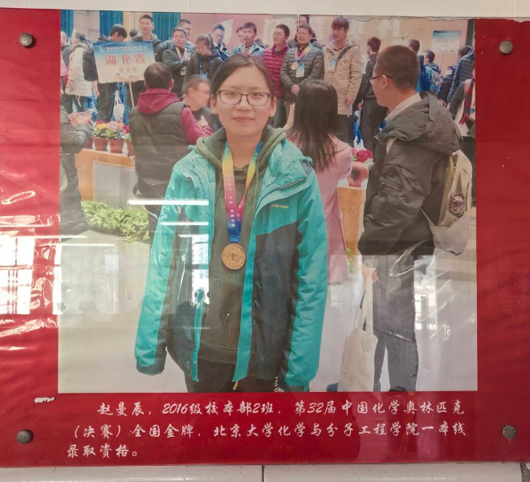

2017 年 9 月，高二，第一次参加化学竞赛初赛，二等奖。
2018 年 9 月，高三，第二次参加，一等奖。
三个月后，第 32 届中国化学奥林匹克决赛，金牌。

PH-02
竞赛与获奖
放入 assets/award.jpg
建议 3:2 横版
建议 3:2 横版
化学竞赛教练
山东省实验中学 · 北京大学化学与分子工程学院校友
我走过的路，
沉淀成了一套培养计划。
01 — 来路
2017 年 9 月，高二，第一次参加化学竞赛初赛，二等奖。
2018 年 9 月，高三，第二次参加，一等奖。
三个月后，第 32 届中国化学奥林匹克决赛，金牌。

但故事的开头不是这样的。
我开始学竞赛，理由很朴素：我喜欢化学。
喜欢到会自己去找大学教材翻，喜欢到觉得配平一个复杂的方程式是件有意思的事。那时候我没有任何计划，没想过金牌，更没想过北大。
2018 年 12 月，金牌来了。2019 年，北大来了。
它们是后来才出现的。
我常常想，如果一开始就奔着它们去，我大概走不到那一步。这条路太长了，长到任何一个功利的目的都撑不到终点。能撑住的，只有喜欢。
这不是说结果不重要。竞赛成绩确实给了我一张很好的门票——但那张门票是跟着我走的，不是我朝着它走的。
2019 年，我进入北京大学化学与分子工程学院。
本科期间，我还修了文物保护技术的双学位。我想知道化学离开教室以后，还能用在什么地方。
文物保护给出的答案最直接：一件从海里捞起来的铁器，锈成了什么、为什么会继续锈、用什么能让它停下来，每一个问题都要回到化学。本科项目“南海Ⅰ号”出水铁锅中 β-FeOOH 的转化，是我第一次利用手里的方程式面对真实存在了七百年的东西。
化学不是一门只在卷面上成立的学科。
2024 年 7 月毕业，8 月走上讲台。我没有给自己留间隔年。
北京大学化学与分子工程学院 2019 — 2024 · 左右滑动
2025 年 6 月，我回到山东，成为山东省实验中学的化学竞赛教练。
有人问，北大化学毕业，为什么回中学。答案并不宏大：我从这里出去，就想回到这里。
我一直记得第一次翻开竞赛书时，那种不知道从哪一页开始的茫然——以及后来，我多么希望有个人能告诉我，哪里该慢一点，哪里可以跳过去。
这件事需要有人长期做，而我恰好愿意。
于是我把那条路，写成了一套可以交给别人的方案。
02 — 培养计划
化学，是变化之学。它既考验捕捉规律的洞察力，也磨炼严谨推演的耐心。
从一名初二学生到省级竞赛一等奖，需要的不是天赋的偶然，而是一套清晰、扎实、被反复验证的培养体系。
这就是那套体系。
303 课时，七个阶段，覆盖初二上至初三下。以《中国化学奥林匹克基本要求（2024 年修订版）》为纲，按大学先修教材的知识深度编排。
课程结构是：236 节新课、36 次测试、28 次讲评、3 次阶段测评，合计 303 课时。
目标只有一个：零基础起步，高一入学 9 月，具备冲击初赛一等奖的能力。
这不是把大学教材提前讲一遍。它按一个十四岁学生的认知顺序，重新决定先讲什么、后讲什么、哪里必须停下来练。
这条路需要合适的坡度——太陡会摔，太平会困。
而这张课表，只是四件东西里的一件。
03 — 方案构成
303 课时，七阶段，五模块。每个阶段结束时学生应达到什么，都有明确的验收条目。它可以交给另一位教练直接执行，而不只是跟着某一个人走。
已编写 24 讲。不照搬大学教材，按初中生的认知顺序重写。同一个概念，第一遍怎么讲、第二遍怎么讲、学生仍不理解时换什么说法，都写进了讲义。
已收录 907 道题，按知识点、难度、题型三个维度标注。题目不是批量抓取，而是按课程进度逐节配置——讲到哪，练到哪。
一套选拔与培养的评估方式。不是为了筛掉谁，而是为了在起点就知道：这个孩子适合走多快，哪一段需要放慢。
04 — 教学实施
五次新课，一次测试，一次讲评。当天的问题当天清。
不是为了排名，是为了知道哪里还没学会。我不喜欢“夹生饭”——煮到一半的米，再回锅就很难熟。
竞赛和课内最大的差别，是题目不会告诉你它考的是哪一章。
会什么、不会什么、下一步做什么，写清楚。
05 — 培养路径
以最专业的方法、最系统的课程、最耐心的陪伴——从第一堂分子结构课，到初赛的考场。
初中化学起步，培养学习习惯。
无机原理打底，开始频繁测评。
原理深化与结构化学，真正的主战场。
有机化学开启。
有机推进，春季联考，向初赛收口。
终点不只在初三升高一的九月。不是每个人都能走到最远，但每个人都会知道自己走到了哪里。
06 — 常见问题
来得及。课程从初中化学核心讲起，不假设任何竞赛基础。
有，而且可能比想象中大。但它是结果，不是目标。我见过太多冲着它来的人，走到一半就走不下去了。
课时安排在周末与寒暑假。竞赛训练对课内数理是正反馈，不是挤占。
每三到四节课一次测评，每个阶段一份书面报告。重要节点我会主动联系。
数学和逻辑基础过关就可以。化学，可以从零开始。